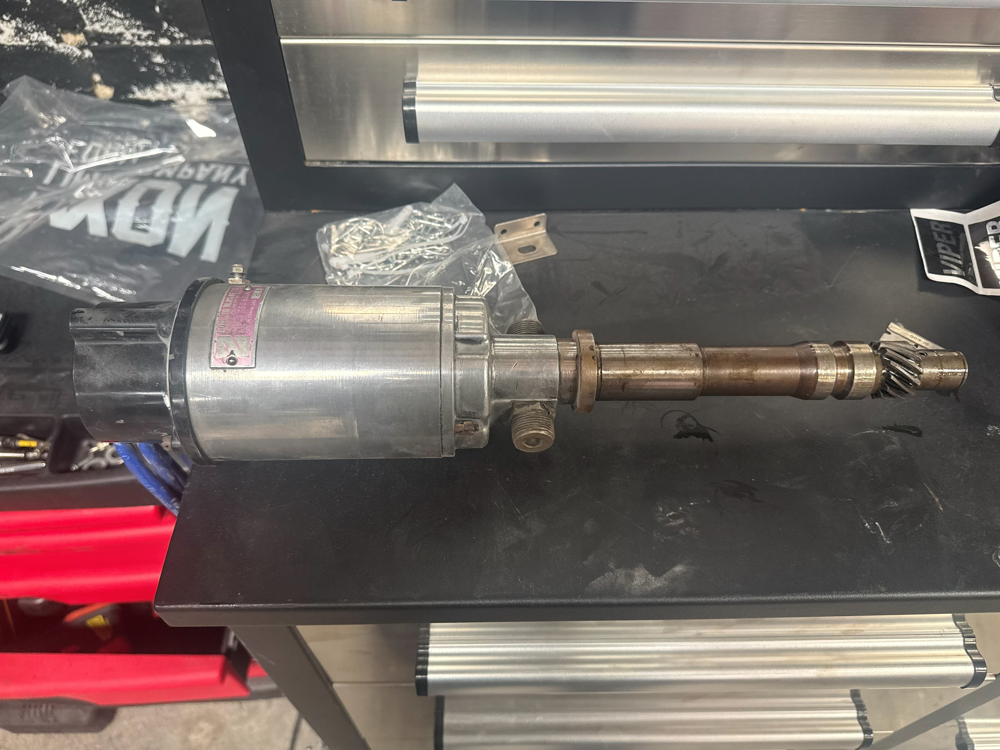
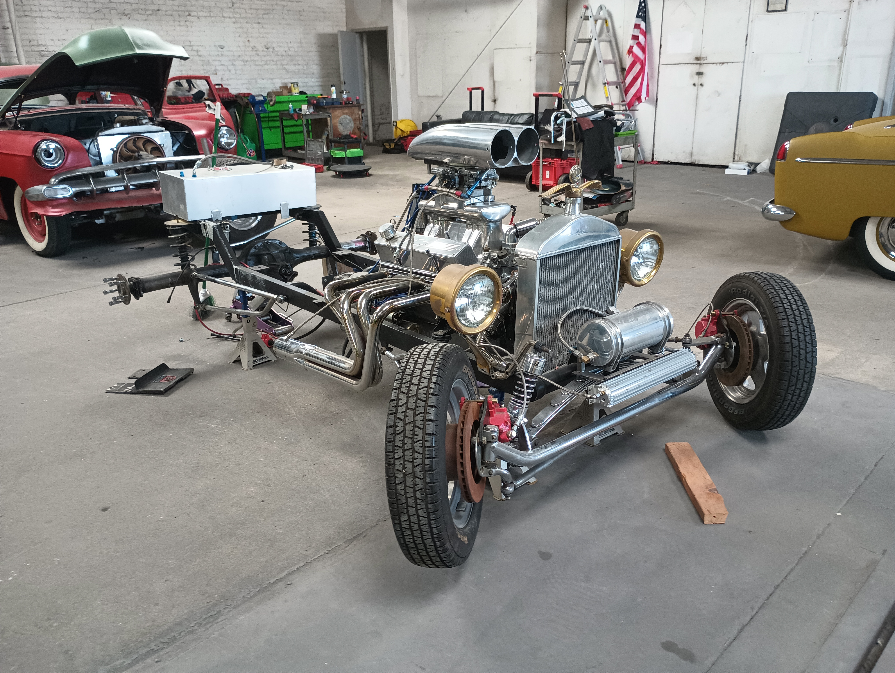
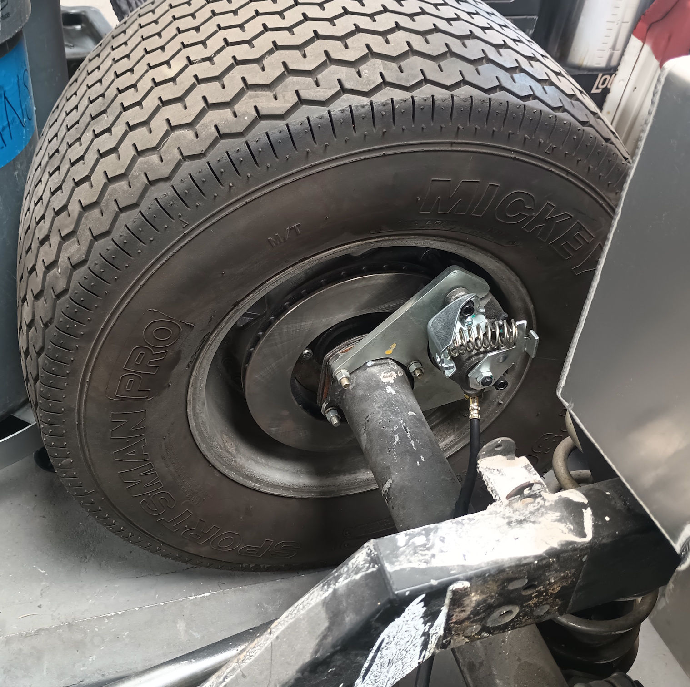
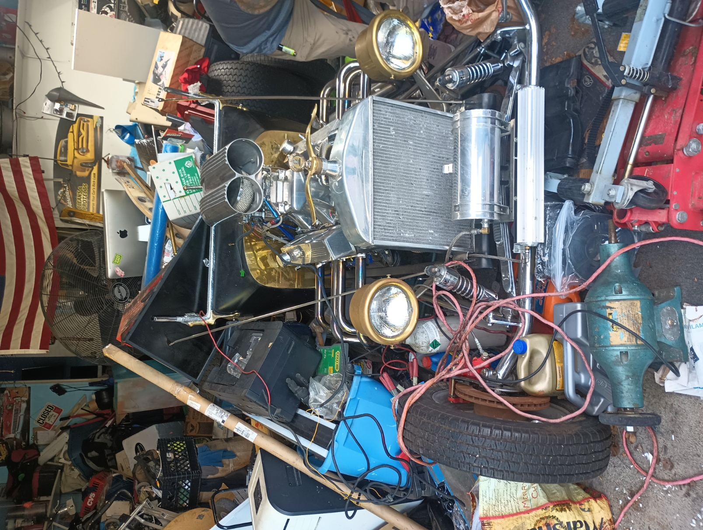
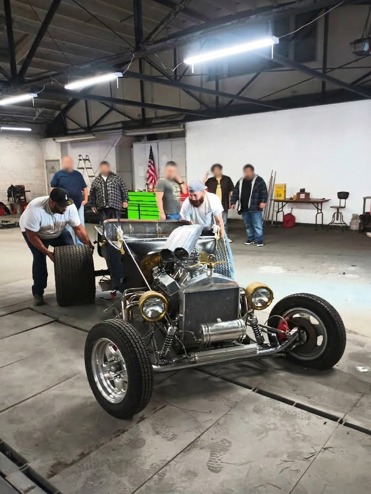

1923 Ford T-Bucket • Vintage Drag Survivor & Mechanical Sorting
Acquired as a survivor build with undeniable drag-race heritage, The Torky T represents a time capsule of vintage hot-rod craftsmanship. Featuring a high-compression 350 Small Block Chevy backed by a TH350 transmission and a Ford 9-inch rear differential, the vehicle was built for purpose rather than show.
Rather than rushing into aesthetic modifications or speculative redesigns, the current phase focuses entirely on meticulous mechanical sorting. Every subsystem, from ignition timing to hydraulic safety, is systematically audited, verified, and re-engineered where necessary to ensure high-speed reliability and absolute chassis confidence.
Uncovering the standalone magneto unit confirmed this 350 SBC's drag-race roots. Rather than assuming functionality, the unit was pulled for bench inspection and dynamic testing to verify spark delivery across the RPM range before final installation.

With four-wheel disc hardware present on the chassis, attention shifted to safety-critical hydraulic integrity. The existing brake line routing and pedal geometry fell short of shop standards. The lines are being completely rerun and bled before any road tests begin.


First sight: buried under decades of household storage in a private garage, dusty but remarkably intact. Upon transport and arrival at the shop, the build immediately drew attention from the crew, confirming its authentic vintage proportions before being placed on stands for initial baseline audits.
Note: The shop delivery image has been edited to blur non-consenting faces and obscure background shop signage for privacy.

